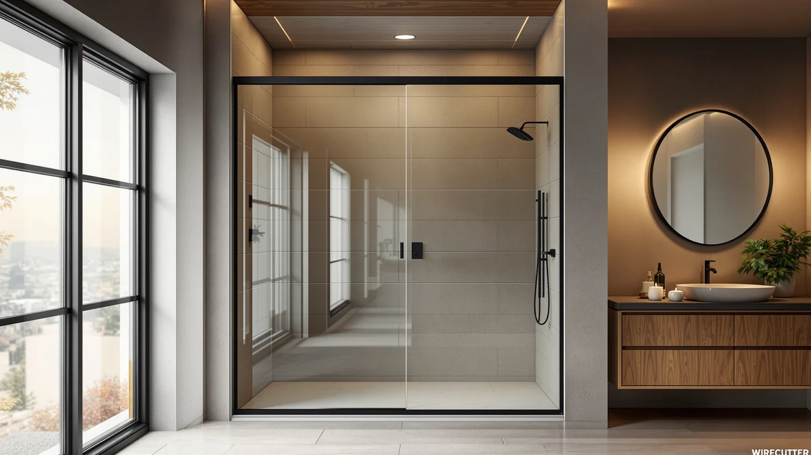

Quick Answer
Sliding (bypass) shower doors glide on a track, so they need zero swing clearance, which makes them the space-saving choice for alcoves and tub-to-shower conversions. Our top pick is the WOODBRIDGE 57.5-60" Frameless Sliding door: thick 3/8" tempered glass, a genuine soft-close mechanism, and a clean frameless look that punches above its price.
Our pick: Woodbridge 57.5-60" Wx76 H Soft — $615.12 Check Price on Amazon
Things to Know Before You Buy
- No swing clearance needed. Because both panels ride a track, a sliding door never swings into the room, so it fits alcoves and tub conversions where a pivot door physically cannot open.
- Your opening is only about half the width. One panel always overlaps the other, so a 60" door gives you roughly a 28-30" walk-in gap. Fine for most adults, tight if you need to carry a laundry basket or assist someone.
- Single-bypass vs. double-sliding. On a single-bypass door one panel slides over a fixed panel; on a double-sliding door both panels move, so you can open from either side for easier center access.
- Glass thickness sets the price and the feel. Premium 3/8" (10mm) glass feels solid and hangs frameless; 1/4" glass keeps the cost down and is standard on value and semi-frameless doors. All of it is tempered safety glass.
- The bottom track needs regular cleaning. The rail that makes sliding possible also traps water, soap scum, and grime, so plan on a quick weekly wipe to keep it gliding and mold-free.
- Measure the adjustable range, and plan for two people. These doors fit a width range (say 56-60") and are usually reversible for left or right opening, but the tempered glass is heavy enough that installation is genuinely a two-person job.
If your bathroom is short on space, a sliding shower door is usually the smartest door you can buy. A pivot or hinged door needs a clear arc of floor in front of it to swing open, and in a cramped alcove or a tub-to-shower conversion that arc simply is not there. A sliding door, also called a bypass door, sidesteps the problem entirely: the panels glide along a top and bottom track, so nothing swings into the room and nothing bumps the vanity or the toilet.
That space savings comes with two honest trade-offs. First, because one panel overlaps the other, your actual walk-in opening is only about half the total width, so a wide 60" door still gives you a gap in the high-20-inch range. Second, the bottom track that makes the whole thing work is a magnet for water and soap scum, so it needs a regular wipe to keep gliding smoothly. Neither is a dealbreaker for most people, but both are worth knowing before you commit.
We looked at frameless and semi-frameless bypass doors across the full price range, from a $230 budget unit for narrow openings up to a $615 soft-close frameless flagship. Below are our six picks, sorted so you can jump straight to the one that fits your opening, your budget, and your style, whether that is a genuine soft-close closer, a double-sliding design for easier center access, or a matte-black frame that reads as intentional rather than cheap.
Why You Should Trust Us
Best Shower Doors is run by Ilane Tall, who has spent years writing about bathroom fixtures and renovation gear for a US audience. We do not run a fake testing lab and we do not invent star ratings. What we do is read the actual product specifications, cross-check the manufacturer claims against verified buyer reviews, and pay close attention to the details that decide whether a door is worth owning: glass thickness, how the rollers are built, whether the "soft-close" is a real damped mechanism or marketing, and how forgiving the adjustable width range is during installation.
Every product here is a real listing you can buy today, and every price and specification was checked at the time of writing. When a door has a genuine weakness, we say so plainly. Our goal is simple: help you pick a door that fits your opening and lasts, not the one with the biggest discount banner.
How We Picked
We started with the sliding and bypass shower doors that sell in real volume in the US, then filtered hard. Every pick had to use tempered safety glass, offer a real adjustable width range so it fits an out-of-square opening, and be reversible for a left- or right-hand install. We threw out doors with a pattern of complaints about rollers derailing, seals that leak at the bottom track, or hardware that arrives corroded.
From there we deliberately spread the picks across situations rather than crowning a single "best." A narrow 44-48" alcove has different needs than a standard 56-60" opening, and someone converting a tub wants something different from someone building a walk-in. So we chose the best soft-close frameless door overall, the best value for a narrow opening, the best semi-frameless value, a double-sliding option for easier center access, the best matte-black look, and the best tall 76" frameless door for the money. Six doors, six clear jobs.
How We Tested
Because a shower door is a fixed installation rather than a gadget, our evaluation is built on specifications and on the lived experience of verified buyers rather than a staged lab. For each door we compared glass thickness (the 3/8" premium panels versus the 1/4" value panels), the roller and track design, the quality of the seals, and how the finish holds up to hard water. We read through owner reviews specifically hunting for the failure modes that matter over years of daily use: rollers that jump the track, bottom sweeps that leak, and coatings that spot or pit.
We also weighed the two universal sliding-door trade-offs on every pick, namely the half-width opening and the bottom-track cleaning, and noted where a given design makes them better or worse. The result is a set of picks chosen on what actually holds up in a wet, heavy-use bathroom, not on marketing copy.
Our Picks

Woodbridge 57.5-60" Wx76 H Soft
What we like
- Thick 3/8" (10mm) tempered glass feels genuinely solid and hangs frameless without a bulky surround
- Real soft-close mechanism eases the panel shut quietly instead of banging on the jamb
- Tall 76" height gives better splash containment than the common 72" doors
- Explosion-proof tempered glass with a clean, minimalist frameless profile
Flaws but not dealbreakers
- At $615 it is easily the most expensive door here, so the premium is real
- That 3/8" glass is heavy, making this the most demanding two-person installation of the group
| Material | — |
| Size | 60"x76" |
The WOODBRIDGE is our top pick because it nails the two things a frameless sliding door is judged on: the glass and the closer. The panels are 3/8" (10mm) tempered glass, noticeably thicker than the 1/4" glass on most doors in this list, and the difference is obvious the first time you slide it. There is no flex, no rattle, just a heavy, deliberate glide. The frameless design keeps the look clean and modern, and at 76" tall it stands above the common 72" doors, which means better containment of water and steam.
The standout feature is the soft-close mechanism. Plenty of doors advertise it; this one actually delivers a damped, controlled close that eases the panel into the jamb rather than letting it slam. Over years of daily use that is easier on the hardware and much quieter. The catch is simply price and weight: at $615 this is the splurge of the group, and the thick glass makes it heavy enough that you will absolutely want a second set of hands (and the bottom track cleaning still applies, as it does to every sliding door). If your opening is in the 57.5-60" range and you want the best sliding door here, this is it.

UCALAFEE Shower Door 44-48" W
What we like
- Lowest price in the roundup at about $230, a genuine budget win
- Sized for narrow 44-48" openings that most doors skip, ideal for tub conversions
- 1/4" tempered safety glass keeps the panel light and the install manageable
- Reversible for a left- or right-hand opening to fit your layout
Flaws but not dealbreakers
- 1/4" glass feels lighter and less substantial than the premium 3/8" panels
- On an already-narrow opening the half-width bypass gap is genuinely tight to step through
| Material | — |
| Size | 44-48 in. W x 72 in. H |
The UCALAFEE is the door to buy when the opening is narrow and the budget is tight. At roughly $230 it is the cheapest pick here, and it is one of the few quality sliding doors sized specifically for 44-48" openings, which is exactly the width you get in a lot of older alcoves and standard tub-to-shower conversions. You give up the thick glass, this is a 1/4" tempered panel rather than 3/8", but for a value door that is a fair trade, and the glass is still fully tempered safety glass.
Be realistic about the opening it creates. On a 44-48" door the bypass design leaves you a walk-in gap of only around the low-20-inch range once one panel overlaps the other, so it is fine for most adults but tight if you like elbow room. The lighter glass also feels less planted than the WOODBRIDGE, which is exactly what you would expect at a third of the price. But if you need a clean sliding door for a small space and do not want to spend big, nothing else here matches the value.

ENSO SENKA 56-60" W x
What we like
- Semi-frameless design gives most of the clean frameless look for far less money
- Fits the common 56-60" opening, the most useful width range for standard showers
- Under $270 makes it one of the strongest value plays in the lineup
- Bypass sliding action needs no swing clearance, keeping it space-friendly
Flaws but not dealbreakers
- The slim edge framing is a visible step down from a true frameless door up close
- Standard 72" height contains a little less splash than the taller 75-76" picks
| Material | — |
| Size | 60" W X 72" H |
The ENSO SENKA is our runner-up because it delivers the best semi-frameless value for a standard opening. Semi-frameless means the door keeps a slim strip of framing on the outer edges while leaving the main span open, so from a few feet away it reads as nearly frameless, but it costs a lot less than a true frameless door. At under $270 for a 56-60" bypass unit, that is a smart middle path for most standard showers.
The compromises are honest ones. Up close you will see the edge framing, so if a completely uninterrupted glass look is the whole point for you, step up to a frameless pick. And at 72" it is a touch shorter than the taller doors here, which contain marginally more splash and steam. But as an everyday sliding door for a normal alcove, the ENSO SENKA hits the value sweet spot: the space-saving bypass action, a clean look, and a price that leaves room in the renovation budget.

GETPRO Shower Door Double Sliding
What we like
- Double-sliding design: both panels move, so you can open from either side
- Center access is easier than a single-bypass door where one panel is fixed
- Semi-frameless styling for a clean look that fits 56-60" openings
- Flexible entry makes it friendlier for tight bathrooms and shared use
Flaws but not dealbreakers
- Two moving panels mean two sets of rollers to keep clean and aligned over time
- At about $323 it costs more than the fixed-panel semi-frameless options
| Material | — |
| Size | 60'' W x 72'' H |
The GETPRO earns its spot on a single clever difference: it is a double-sliding door, meaning both panels move rather than one panel sliding over a fixed one. On a standard single-bypass door your opening is stuck at one side. Here you can slide either panel, so you can enter through the center or from whichever side is more convenient, which is a real quality-of-life upgrade in a tight bathroom or a shower two people share.
That flexibility does add a bit of complexity. Because both panels roll, there are two sets of rollers and tracks to keep clean and aligned instead of one, so the routine bottom-track maintenance every sliding door needs is a little more involved here. It is also about $323, a step up from the fixed-panel semi-frameless doors. But if being able to open the shower from either side matters to you, the GETPRO is the pick that gives you that without moving to a swing door and losing your space savings.

Frameless Shower Door Matte Black
What we like
- Matte-black frame and hardware read as intentional and modern, not cheap
- Frameless single-bypass design keeps the glass expanse clean
- Taller 75" height improves splash containment over 72" doors
- Coordinates naturally with the matte-black faucets and fixtures many baths now use
Flaws but not dealbreakers
- Matte-black finish shows hard-water spots and soap film more readily than chrome
- The dark frame is a bold styling commitment that will not suit every bathroom
| Material | — |
| Size | 60" W x 75" H Single Sliding |
If your bathroom is leaning into the matte-black trend, this frameless single-bypass door is the pick that completes the look. Matte black is everywhere now on faucets, shower valves, and cabinet pulls, and a black-framed shower door ties it all together in a way a standard chrome or nickel door cannot. The frameless design keeps the glass span clean, and at 75" it is taller than the common 72" doors, so it contains splash and steam a little better.
Two things to weigh. First, matte-black finishes show hard-water spotting and soap film more visibly than chrome, so if you have hard water, plan on wiping the frame down to keep it looking sharp. Second, a bold black frame is a design statement; it looks fantastic in a modern or industrial bathroom and out of place in a soft traditional one. At around $296 it is priced sensibly for a frameless door, so if the matte-black look is what you are after, this is the one to get.

Frameless Shower Door 56-60" W
What we like
- Full 76" height gives the best splash and steam containment of any door here
- Frameless look at a value price of about $330
- 1/4" SGCC-certified tempered glass meets US safety standards
- Fits standard 56-60" openings and is reversible for either side
Flaws but not dealbreakers
- 1/4" glass is thinner and lighter than the premium 3/8" panel on our top pick
- No soft-close, so the panel can bump the jamb unless you guide it shut
| Material | — |
| Size | 60" W x 76" H |
This frameless bypass door is the value play for anyone who wants height. At a full 76" it matches the tallest door in this roundup, our premium WOODBRIDGE pick, but it does it for around $330 instead of $615. That extra height is not just cosmetic: a taller panel keeps more water and steam inside the shower, which matters if you have a tall shower surround or you simply hate mopping the floor after every rinse. The glass is 1/4" and SGCC-certified, so it meets the US tempered-safety-glass standard.
The savings come from the glass and the hardware. The 1/4" panel is thinner and lighter than the WOODBRIDGE 3/8" glass, so it does not feel quite as planted, and there is no soft-close mechanism, meaning you guide the door shut yourself rather than letting a damper do it. For a lot of buyers those are easy trade-offs to accept in exchange for a tall, genuinely frameless door at a mid-range price. If height and a frameless look top your list but $615 does not fit the budget, this is the door.
Quick Comparison
| Product | Material | Price | Rating | Best for | Get it |
|---|---|---|---|---|---|
| Woodbridge 57.5-60" Wx76 H Soft | — | $615.12 | 4 | Best overall; premium frameless soft-close | View on Amazon → |
| UCALAFEE Shower Door 44-48" W | — | $229.99 | 4 | Best value; narrow 44-48" openings | View on Amazon → |
| ENSO SENKA 56-60" W x | — | $265.93 | 4 | Best semi-frameless value | View on Amazon → |
| GETPRO Shower Door Double Sliding | — | $322.99 | 4 | Double-sliding; open from either side | View on Amazon → |
| Frameless Shower Door Matte Black | — | $296.04 | 4 | Best matte black; modern baths | View on Amazon → |
| Frameless Shower Door 56-60" W | — | $329.99 | 4 | Best tall (76") frameless value | View on Amazon → |
The Competition
A few categories of door came up in our research but did not make the final six. Fully framed sliding doors are the cheapest option of all, and if pure budget is your only concern they work, but the thick metal frames look dated next to a frameless or semi-frameless panel and the extra channels trap even more grime than a standard bottom track. We would rather point you to the value picks above.
Pivot and hinged doors can offer a wider, more generous opening because there is no overlapping panel eating half the width, but they need clear swing space in front of the shower. In the alcoves and tub conversions these sliding doors are built for, that space usually does not exist, which is the entire reason to choose a bypass door in the first place. If your bathroom does have the room, that is a legitimate different guide.
Finally, curved and neo-angle sliding units for corner showers are a real niche, but they are sized for a specific corner footprint rather than a standard straight alcove, so they are not interchangeable with the doors here. If you have a corner shower, shop that category specifically rather than forcing a straight bypass door to fit.
Frequently Asked Questions
Do sliding shower doors save space compared to pivot doors?
Yes, and it is their main advantage. Sliding (bypass) doors glide along a track, so they never swing outward and need zero clearance in front of the shower. That makes them the right choice for tight alcoves and tub-to-shower conversions where a pivot door literally could not open. The trade-off is that one panel overlaps the other, so your actual walk-in opening is only about half the total width.
What is the difference between single-bypass and double-sliding doors?
On a single-bypass door, one panel slides over a second panel that is fixed in place, so the opening is always on the same side. On a double-sliding door, like our GETPRO pick, both panels move, so you can open the shower from either side or step in through the center. Double-sliding is more flexible for shared bathrooms, but it has two sets of rollers to keep clean instead of one.
How thick should the glass on a sliding shower door be?
Both common thicknesses are fully tempered safety glass, so both are safe. The difference is feel and price. Premium 3/8" (10mm) glass, like on our WOODBRIDGE top pick, feels heavy and solid and hangs frameless with no flex. Value and semi-frameless doors use 1/4" glass, which is lighter and cheaper and perfectly fine for everyday use. If you want the most substantial feel, pay for the 3/8"; if you want value, 1/4" is the norm.
Are sliding shower doors hard to keep clean?
The glass is easy; the bottom track is the chore. The rail that lets the panels slide also collects water, soap scum, and grime, so it needs a regular wipe, roughly weekly, to keep gliding smoothly and stay mold-free. A double-sliding door has a bit more track to clean. Beyond that, matte-black frames show hard-water spots more than chrome, so those benefit from a quick wipe-down too.
Can I install a sliding shower door myself?
Many homeowners do, but it is not a solo job. Every door here fits an adjustable width range and is reversible for a left- or right-hand opening, which makes fitting an out-of-square wall easier. The real issue is weight: tempered glass panels, especially the thick 3/8" ones, are heavy and awkward, so you want a second person to help lift and hold the glass while you set the track and rollers. Measure your opening carefully against the door's adjustable range before you buy.